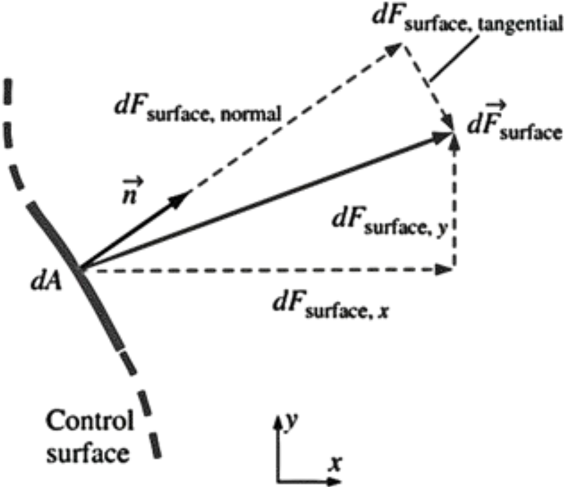
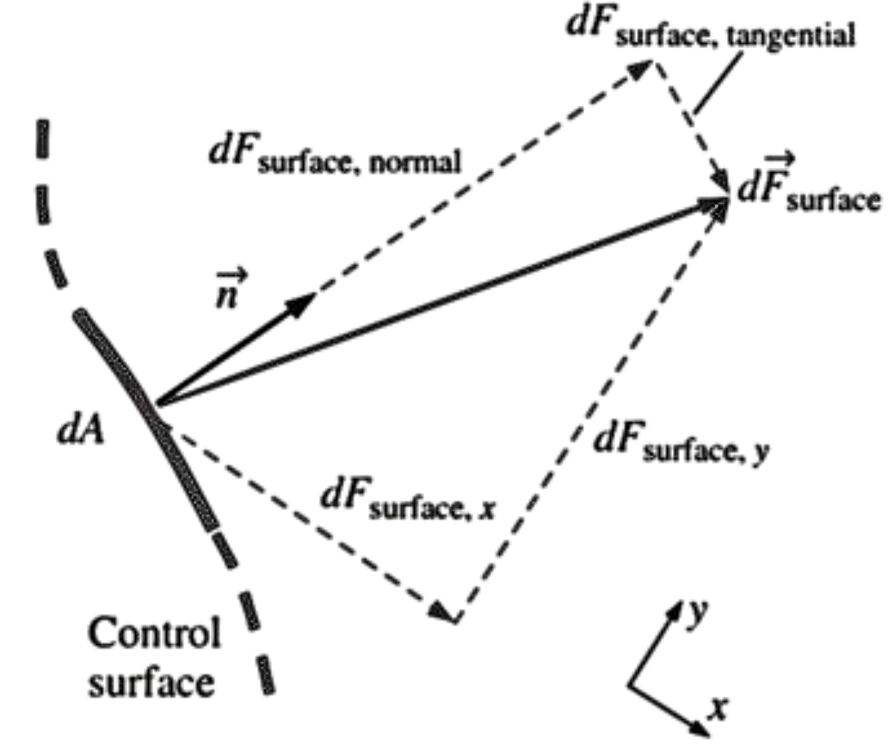

Surface forces are not as simple to analyze since they consist of both normal and tangential components.
Furthermore, while the physical force acting on a surface is independent of orientation of the coordinate axes,
the description of the force in terms of its coordinate components changes with orientation.
In addition, we are rarely fortunate enough to have each of the control surfaces aligned with one of the coordinate axes.
When coordinate axes are rotated  to , the components of the surface force change, even though the force itself remains the same
While not desiring to delve too deeply into tensor algebra, we are forced to define a second-order tensor called the stress tensor \( \sigma_{ij} \) in order to adequately describe the surface stresses at a point in the flow.
Stress tensor in Cartesian coordinates:
\[
\sigma_{ij} =
\begin{pmatrix}
\sigma_{xx} & \sigma_{xy} & \sigma_{xz} \\
\sigma_{yx} & \sigma_{yy} & \sigma_{yz} \\
\sigma_{zx} & \sigma_{zy} & \sigma_{zz}
\end{pmatrix}
\]
The diagonal components of the stress tensor, \( \sigma_{xx}, \sigma_{yy}, \) and \( \sigma_{zz} \), are called normal stresses;
they are composed of pressure (which always acts inwardly normal) and viscous stresses.
The off-diagonal components, \( \sigma_{xy}, \sigma_{zx} \), etc., are called shear stresses; since pressure can act only normal to a surface, shear stresses are composed entirely of viscous stresses.
◀
▶